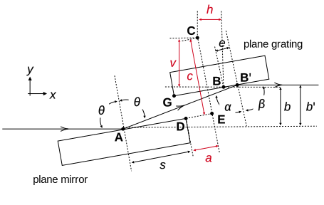

Documentation
-
Initialisation and System Requirements
-
Parameters
-
Beam Size Configuration
-
Offsets Configurations
PGMweb is a web-based simulation tool for plane grating monochromators (PGM) frequently used in soft X-ray synchrotron beamlines and at free-electron lasers.
The interface was built using Shinylive. Any modern browser will be able to run the tool. However, for best experience,
we recommend using the latest version of Google Chrome or Mozilla Firefox on a desktop or laptop computer as scaling may be an issue on mobile devices.
Initialisation and System Requirements
Upon first visit, a loading screen will appear as the tool is being initialised. Your browser will gather all the necessary files and install
a minimal python environment within the browser to perform calculations. Depending on your internet connection, this may take up to a minute to load as about 200 MB
of data is transferred. Subsequent reloading may be significantly faster depending on your browser's caching settings.
Parameters
The control interface highlights four primary parameters which you may wish to change often. They are:
Energy - floating point number in units of eV, this sets the energy to be transmitted by the PGM.
Diffraction order - integer, this sets the diffraction order from the grating.
$\mathit{c_{ff}}$, fixed focus constant - floating point number where $\mathit{c_{ff}}\in ]1, \infty)$
Grating line density - floating point number in units of lines/mm.
These four parameters are fed to the grating equation and angles are computed. The grating equation has the form:
$$1 - \left( \frac{n\lambda}{g} - \sin\beta\right)^2 = \frac{\cos^2\beta}{\mathit{c_{ff}}^2}$$
where $n$ is the diffraction order, $\lambda$ is the wavelength, $g$ is the reciprocal of the grating line density, $\beta$ is the angle of diffraction from the grating,
and $\mathit{c_{ff}}$ is $\frac{\cos\beta}{\cos\alpha}$. To ensure that the outgoing beam is parallel to the incoming beam, incidence angle on the mirror ($\theta$) is
constrained to: $2\theta = \beta + \alpha$.
Beam Size Configuration
You may choose to specify your own vertical and horizontal beamsize in mm at the mirror. Additionally, the tool
provides you the capability of calculating the vertical beam size from an undulator source. This is accessed by ticking
the "Calculate beam size" checkbox, which will prompt you to enter the following parameters:
Vertical electron beam size (RMS) in um - $\sigma_y$
Vertical electron beam divergence in urad - $\sigma'_y$
Distance to the image plane (m) - $d$
Length of insertion device - $L$
Number of $\sigma$s to include - $n_\sigma$
The RMS photon source size is first calculated with the formula:
$$\text{Source Size} = \sqrt{\sigma_y^2 + \frac{\lambda L}{2\pi^2}}$$
where $\lambda$ is the wavelength of the beam. The photon source divergence is then calculated as:
$$\text{Source Divergence} = \sqrt{\sigma_y'^2 + \left(\frac{\lambda}{\pi L}\right)^2}$$
with the final beam height at the mirror calculated as:
$$\text{Beam Height} = \sqrt{\text{Source Size}^2 + (\text{Source Divergence}\cdot d)^2}\cdot n_\sigma$$
Using this function will correctly account for the changing beam size as you change the energy of the PGM.
Offsets Configurations
The offsets are defined according to the following diagram:

where the quantities which can be defined by the user are highlighted in red arrows:
$b$ - the vertical beam offset, should be a negative value.
$c$ - the vertical offset, defines the distance from $\mathbf{C}$ (the mirror rotation centre)
to the point $\mathbf{E}$ (projection of $\mathbf{C}$ onto the mirror plane), should be a positive value.
$a$ - the horizontal offset, the same as $c$ but for the horizontal component. $a$ should normally be positive but can be negative.
$v$ - the vertical axis offset, defines the distance from the mirror rotation centre to the grating rotation centre. $v$ should be positive.
$h$ - the horizontal axis offset, defines the distance from the mirror rotation centre to the grating rotation centre. $h$ should be positive but is usually 0.
The tool offers you the option to calculate offsets automatically. When this option is selected, you will only need to specify the offsets $b$ and $a$,
the rest of the offsets will be calculated as per:
$$|b| \approx c \approx 2v$$
and $h$ is set automatically to 0.
The derivation of this relation can be found in our publication.
Interacting with Plots
Each time a parameter is changed, after a set delay, the tool will generate new plots. The beam footprint plot ("top view") shows a
pseudo-birdseye view of the PGM from above, with the top of the optical surfaces of the mirror and grating shown, as well as the footprint
that the beam leaves on the respective surfaces. This shows you whether or not overillumination happens, and if the beam is correctly fitting
on the surfaces.
The side view plot shows three rays propagating through the PGM. The beam formed by the three rays are of correct height either specified by the user or
calculated from ID parameters.
Both plots are interactive and can be panned and zoomed thanks to plotly. For more information on how to interact with the plots, please visit the
plotly documentation. But in summary, the functions are located on the top right corner
of each of the plots, and offer you the ability to export the plot as a PNG, zoom in and out either by selecting a rectangular region or using the + and - buttons, and pan around the plot.
If you fail to see the buttons, and or fail to see the full axis range, it is likely a scaling issue. This can be fixed by zooming out in your browser, commonly done with "Ctrl -".
This tool is provided as is and without warranty. It is available for free and open-source use under the MIT license.


Copyright 2024 Patrick Wang, Andrew Walters, and Murilo Bazan da Silva